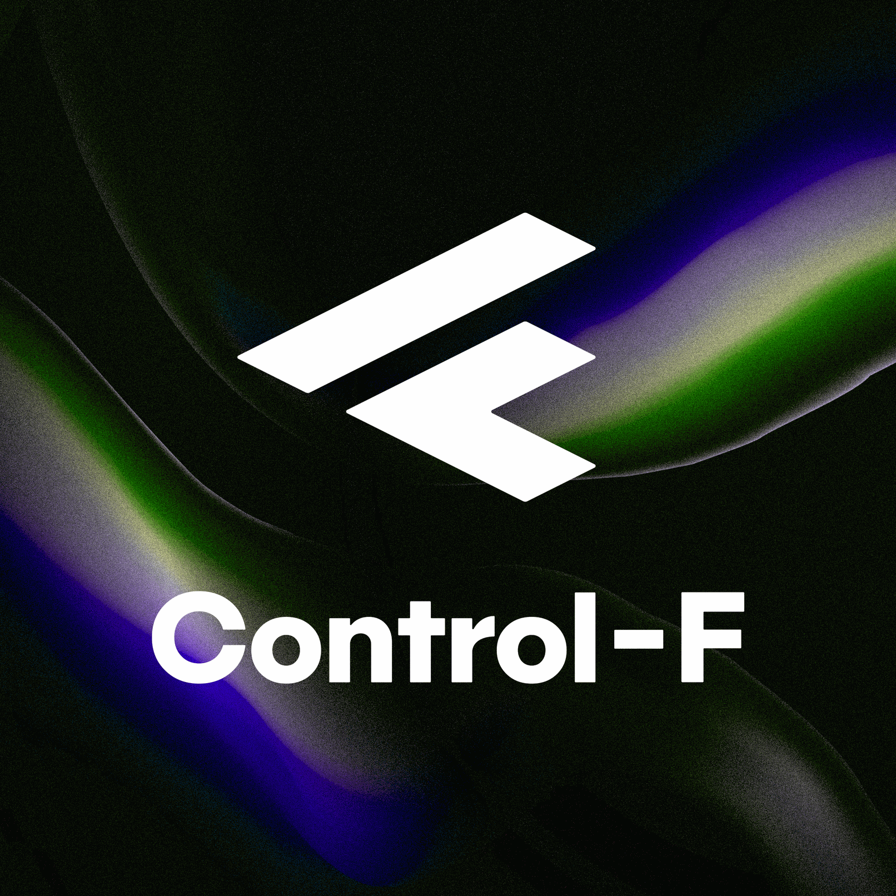
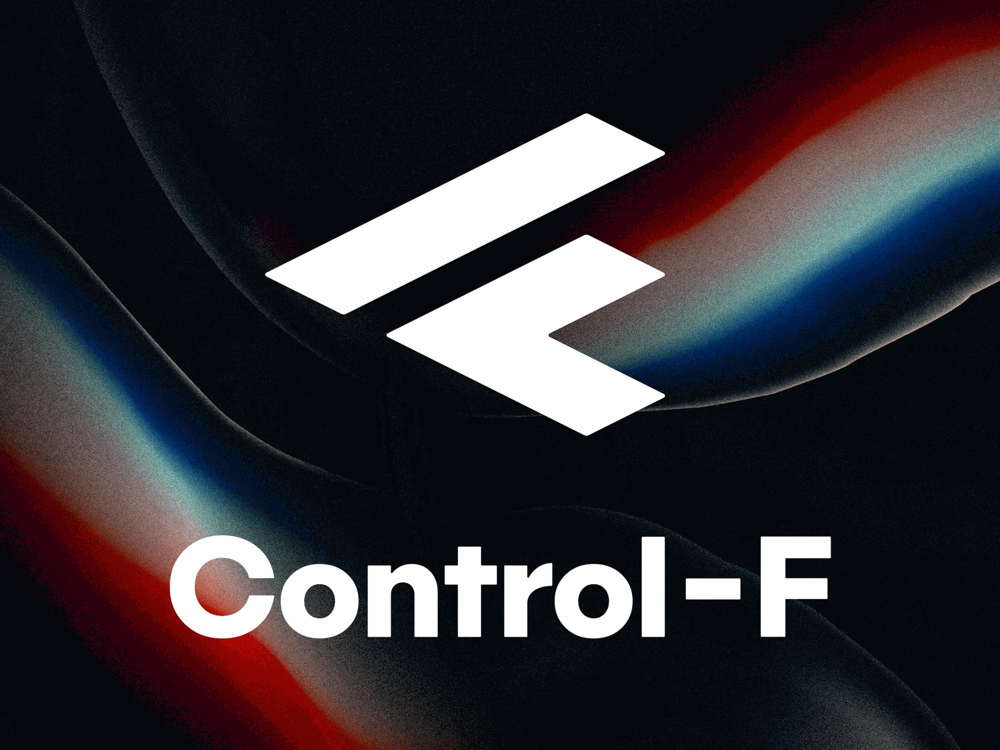
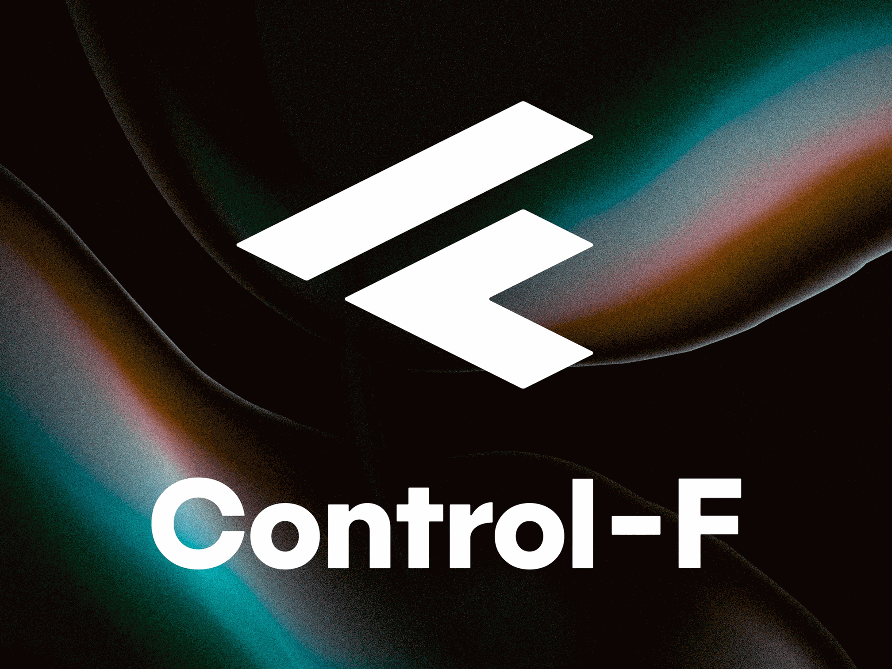
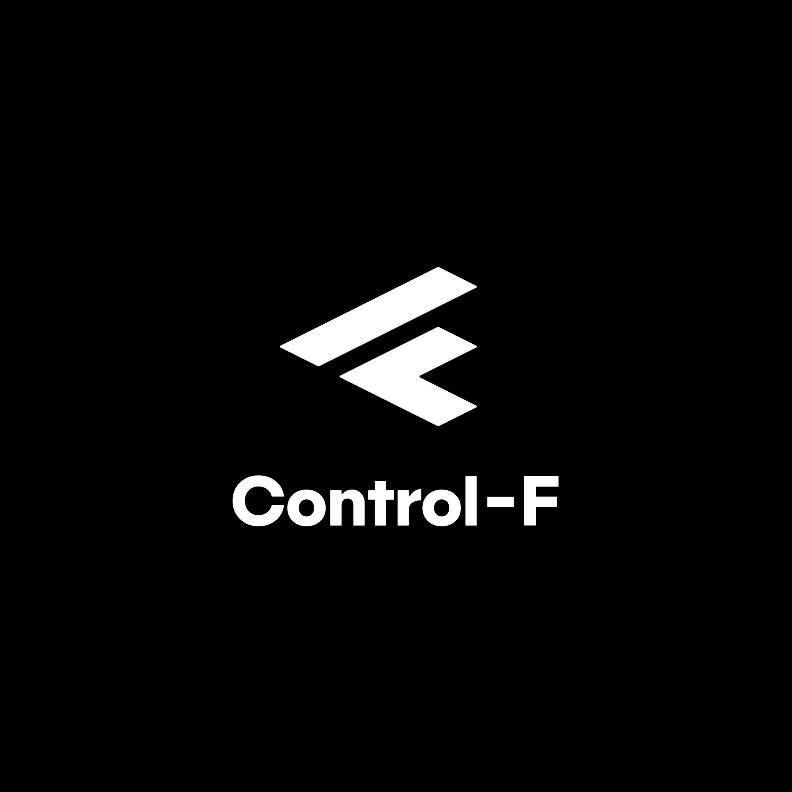

Karriere
Warum hier
Wir sind ein Team mit Hauptsitz in Konstanz, verteilt über ganz Deutschland und mit einem Schwerpunkt in Berlin. Wir arbeiten an Anlagen, die es wirklich gibt: Windparks, Zugflotten, Batteriespeicher, Walzstraßen, Gasturbinen. Was dort an Daten anfällt, liegt meistens vor, nur eben in vielen Systemen, in vielen Formaten, und nirgends zusammengeführt. Unsere Arbeit beginnt an dieser Stelle und hört erst auf, wenn jemand im Betrieb eine Antwort daraus liest.
Das heißt für die Arbeit selbst zweierlei. Sie sehen die Anlage, über die Sie schreiben: Wir fahren hin, und Sie fahren mit. Und Sie bleiben an einer Sache lang genug, um sie fertig zu machen. Projekte laufen hier über Monate, nicht über Wochen, und was gebaut wird, wird auch betrieben.
Wir sind die Spezialisten dafür, aus diesen Anlagen Verfügbarkeit und Ertrag herauszuholen: weniger ungeplante Stillstände, bessere Wartung, mehr aus dem, was schon steht.
Rahmen
- Büro
- Komplett remote.
- Team
- Vier Disziplinen, eine Kaffeemaschine.
- Technik
- Python, TypeScript, Postgres, Kubernetes.
Wie wir arbeiten
-

Wir fassen die Hardware an, über die wir reden
Telemetriedaten fangen nicht im Data Warehouse an, sondern am Sensor. Deshalb liegen zwischen den Laptops Platinen, Messgeräte und Klebeband. Wer bei uns eine Pipeline entwirft, hat vorher gesehen, was am anderen Ende hängt.
-

Die Kaffeepause gehört zur Arbeit
Die Küche ist der zweite Besprechungsraum. Vieles, wofür es sonst einen Termin gebraucht hätte, ist dort in zehn Minuten entschieden — mit einer Kanne Kaffee und ohne Agenda.
-

Zwei vor einem Bildschirm sind keine verlorene Stunde
Bei uns zieht man jemanden dazu, statt sich allein durchzubeißen — und es ist egal, wer länger dabei ist. Fragen kosten Minuten, falsche Annahmen kosten Wochen.
Offene Stellen
-

DevOps Engineer (m/w/d) – Azure / Azure DevOps / Databricks / Terraform | Vollzeit | Full Remote
Modelle für Zustandsüberwachung und vorausschauende Wartung — von der ersten Hypothese bis in den Betrieb, inklusive der Frage, wie man ihnen später ansieht, dass sie noch stimmen.
- Standort
- Remote
- Anstellung
- Festanstellung
- Umfang
- Vollzeit
- Start
- ab sofort
-

Data Engineer (m/w/d)
Sie bauen die Strecken, auf denen Anlagendaten ankommen: Anbindung, Modellierung, Qualitätssicherung. Ohne dieses Fundament ist jede Auswertung darüber geraten.
- Standort
- Konstanz, hybrid
- Anstellung
- Festanstellung
- Umfang
- Voll- oder Teilzeit
- Start
- ab sofort
-

Machine Learning Engineer (m/w/d)
Modelle für Zustandsüberwachung und vorausschauende Wartung — von der ersten Hypothese bis in den Betrieb, inklusive der Frage, wie man ihnen später ansieht, dass sie noch stimmen.
- Standort
- Konstanz, hybrid
- Anstellung
- Festanstellung
- Umfang
- Vollzeit
- Start
- ab sofort
-

Werkstudent (m/w/d)
Sie arbeiten an unseren Datenplattformen, Auswertungen und Oberflächen — wo Sie einsteigen, richtet sich nach dem, was Sie mitbringen. Python, SQL, HTML und CSS, so viel wie die Aufgabe verlangt.
- Standort
- Konstanz
- Anstellung
- Werkstudium
- Umfang
- 16–20 Std./Woche
- Start
- ab sofort
Nichts Passendes dabei? Schreiben Sie uns trotzdem. Wir lesen jede Initiativbewerbung und antworten auch dann, wenn wir gerade nichts zu besetzen haben.